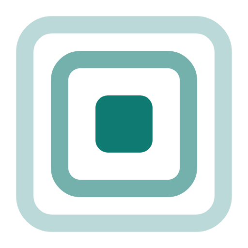
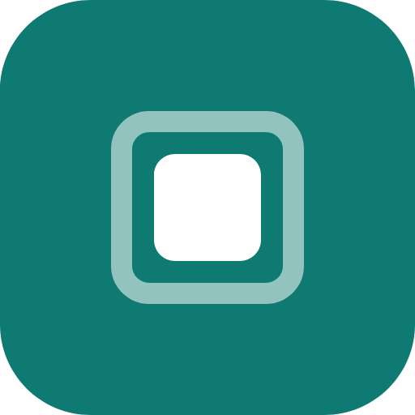

Brand · Mark
The oto mark is Nested Rooms — three concentric rounded squares reading as speakers nested inside a home. The solid center is the room you're in; the outlines recede into the rest of the house.
Primary mark
Lockup · mark + wordmark
Wordmark is set in Geist 700, tracking −0.02em. The lockup SVGs reference the live font; outline the text before handing to external vendors who may not have Geist installed.
Raster · PNG & favicon


The favicon and app icon use a solid teal tile with white nested rooms — the faint outline rings of the primary mark drop out below ~18px, so small sizes need the filled treatment. Apple touch icon (180px) is included in brand/.
Usage
Keep padding of at least the center square's width on all sides. Nothing intrudes inside the dashed boundary.
Don't render the mark below 18px — the outer ring's 0.28 opacity drops out at small sizes. Use the solid-center-only treatment if you need a favicon.
Primary color is the teal accent #0f7a72 (light) / #5dd6c8 (dark). Use the black or white monochrome marks anywhere the teal would clash or fail contrast.
{kind=link}
{kind=link}
{kind=link}
{kind=link}
{kind=link}
{kind=link}
{kind=link}
{kind=link}